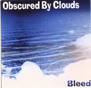

Home Artist links Label link

| Artist: | Obscured By Clouds |
| Title: | Bleed |
| Label: | Rainforest Records |
| Length(s): | 42 minutes |
| Year(s) of release: | 1999 |
| Month of review: | 04/2000 |
Line up
William Weikart - vocals, guitar
Ray Woods - mellotron, keyboards
Roger Freibel - percussion
Tracks
| 1) | Bleed | 6.20
|
| 2) | Fearless | 3.04
|
| 3) | Pigs On The Wing | 2.37
|
| 4) | Cirrus Minor | 3.57
|
| 5) | Breathe | 3.15
|
| 6) | Julia Dream | 3.54
|
| 7) | Crystal Ship | 2.23
|
| 8) | Cymbaline | 3.34
|
| 9) | That's The Way | 4.40
|
| 10) | Bleed (long Version) | 8.33
|
Summary
The name of the band and some of the titles already indicate it: this band has
a connection to Pink Floyd. They also have a website that you might want
to visit.
The music
Bleed is the opening track. It opens slowly with acoustics. The melody is
really good here and the use of mellotron is beautiful. I however did hear
some strange interference on the cd. Not loud but audible, a bit of a
rustling sound. On my own machine the noise level was quite high (with
>16Khz wide open). On another, better one without an equalizer it was
hardly audible. The music on this track continues to be soft and quiet
and like Floyds music on the low key side. This also holds for Fearless
ands Pigs On The Wing. William Weikart has a down sounding voice and
the acoustic guitar and the carpets of keyboards give the music a funeral
like characteristic. A nice trick in here is the disappearance of the vocalist
into something of a vault making his voice sound gradually more hollow.
The conclusion on organ is full of warmth and feeling. Breathe is the first
track that is recognizably Pink Floyd (although the previous tracks are
all covers, with the exception of Bleed). From the psychedelic era of
Pink Floyd we have Julia Dream. It is striking that all these tracks have
been made so much their own by Obscured By Clouds. This is not the plain
replaying of the songs, but showing that these pieces stand up in their
nakedness. This also holds for the Doors composition Crystal Ship in which
percussion plays a large role. It is hardly noticeable that there are different
bands responsible for these songs. Cymbaline signifies a return to the
Pink Floyd compositions. Like on Breathe, the song sounds like "PF".
That's The Way is the next one up. This is a Led Zeppelin track and for me
the least pleasing of the tracks on this album, mostly because of the
yeah-he-heah part. The album concludes with a long version of Bleed, the
only self penned piece (but in all responsible for 15 minutes of the 42
that this album is long). For it I refer you to the first track.
It was unfortunate that I could not compare the originals with these
new version, because my record player is broken and most of the music
I have only on vinyl. The only ones I could compare were the versions
of Fearless. I tend to prefer the version of OBC for this one, because
I don't like the intro that much and they have skipped it (you know the part
that is quite dominant in the Fish cover of this same track).
Conclusion
An album of pleasing music, brought in a strictly introspective way. The
acoustic guitar, percussion and for melody the keyboards and mellotron make
for a consistent cover album in which the new compositions hardly strike one
as being of lesser quality. For proggers the music may be a bit too standard
in the sense that there are no breaks, no flashy musicianship or bombastic
passage on keyboards. It is however remarkably mature.
© Jurriaan Hage